Register errors in deposited antibody structures
How often antibody models in the Protein Data Bank have residues threaded one position out of place, which explanations survive testing, and why the mistakes keep being copied.
Contents
Summary
Protein structures in the Protein Data Bank (PDB) are interpretations of experimental data. When the data are blurry, as they are at 3–5 Å resolution, a modeller can trace the protein's backbone correctly but attach the amino-acid sequence to it one or more positions out of step. This is a register error: every residue in a stretch sits where its neighbour should be. The backbone still looks right, so standard validation statistics barely notice.
A 2024 study used AlphaFold2 predictions to screen the PDB and flagged putative register errors in roughly one in six entries at 3–5 Å. An entry is a whole deposition, typically about 1,300 residues long. Counted per protein domain, the same flags cover about 4% of domains. This report asks what that means for antibodies, which are now among the most frequently deposited proteins in cryo-electron microscopy (cryo-EM), both as the object of study and as tools that help other proteins be seen.
I re-analysed the 2024 flags, then built an independent, AlphaFold-free detector. It compares two ways of numbering each antibody residue: SAbR, which numbers residues from the 3D backbone, and ANARCI, which numbers them from the sequence. I ran it on every antibody variable (V) domain at 3–5 Å in the PDB through 2026. I then tested nineteen explanations for why errors occur and why they persist, including whether antibodies only look clean because their domains are short.
Key findings
- Antibodies are not intrinsically error-prone. In the 2024 data, antibody V domains are among the least flagged fold classes (1.5%, against 2.7–11% for most other folds). This also holds per residue and at matched length: 1.55% of antibody V domains are flagged against 3.9% of non-immunoglobulin domains of the same length. They are flagged about as often as their closest structural relatives. The one exception is recent cryo-EM. For 2020–22 depositions, antibody V domains are 1.4–1.6 times as error-prone per residue as non-immunoglobulin domains. Most of that gap is a blind spot of the 2024 method; among proteins new to the PDB it shrinks to 1.2 times and is not significant.
- Cryo-EM antibody models carry 3–6 times the error rate of X-ray models at the same resolution. The gap does not come from the usual measures of local map quality, and it has narrowed since 2022.
- The apparent 2020–22 "surge" was partly a measurement artifact. The 2024 method compares models with AlphaFold2, which had been trained on pre-2018 structures, so it could not see errors in them: it caught 10% of independently detected errors in pre-2018 structures, against 40% later. With a detector that does not depend on AlphaFold, the antibody error rate rose only because the method mix shifted to cryo-EM. It then fell sharply from the second half of 2021.
- Time pressure and carelessness are not supported. Antibodies used only as tools, papers in high-impact journals, contested targets, fast releases and SARS-CoV-2 structures were all as good as or better than the comparison groups.
- Errors are made where the modeller cannot confidently place residues. These places are chain ends, residues next to stretches that could not be built, and the edges of the hypervariable loops. At the edges the commonest form is a loop built one residue short or long, so that the adjacent framework strand slides by one position. In about 40% of these junction errors the strand's conserved anchor, Trp/Phe118, is pulled out of the protein core.
- Errors spread by copying. A model built from a clean earlier structure is almost never wrong (0.3–0.8%). One built from a flawed earlier structure usually is (61–93%). One flawed 2018 template (Fab 1B2, PDB 6C9U) has been reproduced in 15 later entries by 4 labs.
- Errors persist. They are copied across symmetry copies and across a paper's entries (34% of error runs), almost never revised (9%), and invisible to AlphaFold2-based audits in exactly the older structures most likely to be reused as templates.
The diagnosis, in one sentence: antibody register errors are a model-building problem at the uncertain edges of a structure, amplified by template reuse, and they persist because nothing in the deposition and validation pipeline forces anyone to look. The fixes are cheap. A sequence-versus-structure numbering check takes about 0.3 seconds per chain, and a burial check of one conserved tryptophan catches a large share of the commonest error type.
Every hypothesis at a glance
The hypotheses are listed in roughly the order they were raised. Each is tested in Section 5. "conkit" refers to the 2024 AlphaFold2-based flags (PDB snapshot of April 2022). "SAbR" refers to the new AlphaFold-free scan (all structures through 2026).
| # | Hypothesis | Key evidence | Verdict |
|---|---|---|---|
| H1 | Antibodies are more error-prone than comparable folds | Antibody V 1.5% flagged vs other Ig-superfamily 1.3% and most other folds 2.7–11%. Same-length Ig-like domains: similar. The TCR comparison could not be made with SAbR | ✗ Rejected |
| H1b | Antibodies only look clean because V domains are short | Per residue and length-matched, antibody V is lower overall (HR 0.58; 1.55% vs 3.9%). 2020–22: 1.41× (cryo-EM 1.59×), but 1.2× (n.s.) among proteins new to the PDB | ↻ Partly, recent cryo-EM only |
| H2 | Antibody errors surged in 2020–22 | conkit: 0.36% → 2.89%. SAbR: high since 2018, rise entirely due to method mix, then a sharp fall from 2021H2 | ↻ Revised |
| H3 | The 2024 detector's low early rate is real | conkit caught 10% of SAbR-detected errors before AlphaFold2's training cutoff, against 40.5% after. SAbR's X-ray rate is flat across the cutoff | ✗ Rejected (it is an artifact) |
| H4 | Cryo-EM is worse than X-ray at matched resolution | OR 5.8 (≤2022) and 3.3 (newer). Unchanged after adjusting for local map quality | ✓ Supported |
| H5 | Poor maps explain errors | Local map quality has OR ≈1.0 for flags overall. It is predictive only for CDR3–FR4 junction errors (OR 0.70 per SD) | ✗ Mostly rejected |
| H6 | Authors are careless with antibodies used only as tools | conkit OR 0.97. SAbR OR 0.30 (≤2022), 0.79 (newer). Reused reagents 0/67 flagged vs 3/67 for other antibodies in the same entries | ✗ Rejected |
| H7 | Scooping pressure: high-impact journals, many structures, competition, novelty, fast release | No consistent effect for antibodies. Several point the opposite way. Modest effects (OR ~1.3) only for non-antibody domains in the conkit data | ✗ Not supported |
| H8 | The SARS-CoV-2 rush produced errors | conkit 2020: 6.4% vs 1.4%, but concentrated in 5 labs. SAbR: 11.2% vs 11.0% (2020), 3.6% vs 7.9% (2021) | ✗ Rejected |
| H9 | Antibody errors co-occur with errors in other chains (sloppy entries) | Not with the antigen (OR 1.09). Yes with other antibody chains (OR 2.7). Identical copies all flagged in 86% | ↻ Revised |
| H10 | Errors cluster by laboratory | Dispersion 3.0–3.2× expected. Weak persistence across eras (OR 1.27, n.s.) | ✓ Supported (weakly persistent) |
| H11 | An earlier high-resolution structure protects | conkit OR 0.32. SAbR: 4.1% with vs 4.1% without, because it depends on the template: clean 0.8%, flawed 93% | ↻ Revised |
| H12 | Bad templates are reused and their errors copied | Starting model flawed: 84.5% flagged vs 0.3%. 82% carry the identical error. Fab 1B2: 15 copies in 4 labs | ✓ Supported strongly |
| H13 | The 7MXL / REGN5713 flag is a false alarm | Initially concluded, but from a pipeline bug. Corrected: the flag is right, and the error sits beside an unbuilt loop | ✗ Rejected (flag is real) |
| H14 | SARS-CoV-2 haste plus bad templates explain most antibody flags | Together about half of the conkit antibody flags, but SARS-CoV-2 is a label, not a mechanism (H8) | ↻ Revised |
| H15 | Errors are rarely corrected | 9% of flagged antibody entries ever revised. 62% of unrevised flagged segments still wrong today | ✓ Supported |
| H16 | AlphaFold2 starting models reduced errors after 2021 | Timing fits (drop in 2021H2), but entries recording an AlphaFold model are no better (OR 0.91, 0.40–2.07). Usage is under-recorded | ? Unresolved |
| H17 | Errors arise at chain ends and next to unbuilt loops | 11.9% of runs vs 0.9% of matched windows next to a gap. 18.1% vs 3.4% flagged when the N-terminus is missing | ✓ Supported strongly |
| H18 | The "unexplained" remainder is random | It concentrates at the CDR3–FR4 junction, an FR4 bulge, and the CDR1/CDR2 boundaries. Trp/Phe118 is pulled out of the core. Unexplained share falls from ~40% to 5–11% | ✗ Rejected (it is patterned) |
1Background
How a protein structure is made
The PDB holds about a quarter of a million experimentally determined 3D structures of proteins and other macromolecules. Most come from two methods.
- X-ray crystallography measures how a crystal of the protein diffracts X-rays.
- Cryo-EM averages tens of thousands to millions of images of frozen single molecules.
Neither method produces atomic coordinates directly. Each produces a three-dimensional map of electron density (X-ray) or electrostatic potential (cryo-EM). A scientist, increasingly helped by software, then builds an atomic model into that map. The model is what gets deposited and what almost everyone downstream uses.
How easy that interpretation is depends on resolution:
- At 2 Å or better, individual atoms are nearly resolved and each amino acid's side chain has an unmistakable shape.
- At 3–5 Å, the regime this report covers, the backbone is usually traceable as a tube. Bulky side chains (Trp, Phe, Tyr, Arg) appear as bumps, and small ones (Gly, Ala, Ser) are invisible.
Cryo-EM has made 3–5 Å maps of large complexes routine. Resolution also varies within a cryo-EM map, often worst at the periphery, which is exactly where an antibody bound to a large target tends to sit.
What a register error is
Picture the backbone as a string of beads and the sequence as a list of labels. A register error happens when the modeller hangs the labels on the beads one (or more) positions out of step. In the shifted stretch, every residue's side chain points into the density meant for its neighbour. Figure 1 illustrates this.
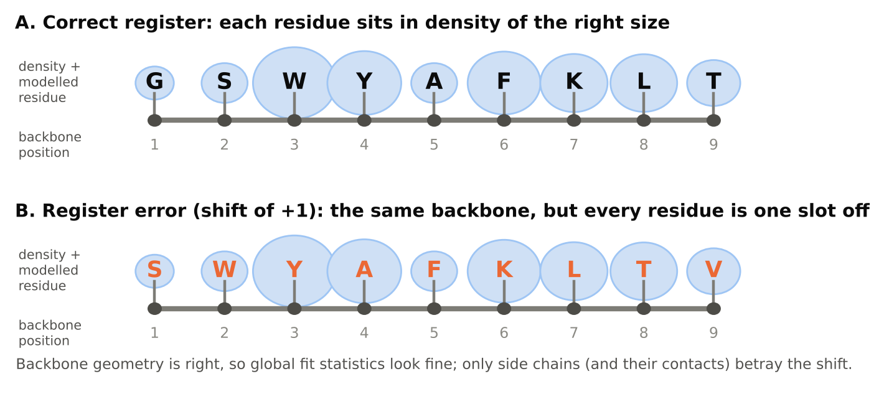
Register errors matter for several reasons:
- Interfaces. Every inter-residue contact in the shifted region is wrong. For an antibody, that can mean the wrong residues listed at the binding interface (the paratope) or contacting the antigen (the epitope).
- Downstream data sets. Antibody structures from the PDB feed epitope mapping, therapeutic engineering, computational antibody design, and the training sets of structure-prediction and design models. AlphaFold was trained on the PDB.
- Templates. Deposited models are reused as starting points for new structures, so one error can propagate.
Antibodies, and how their residues are numbered
An antibody's antigen-binding fragment (Fab) consists of a heavy chain and a light chain (κ or λ). Each chain has a variable (V) domain, which binds antigen, and one or more constant (C) domains. Smaller formats are also common:
- Single-chain variable fragments (scFvs) join the two V domains with a linker.
- Nanobodies (VHH) are single V domains from camelids.
Every V domain has the same immunoglobulin fold: two β-sheets packed against each other. Within it:
- Frameworks (FR1–FR4) are conserved stretches that make up the β-sandwich.
- Complementarity-determining regions (CDR1–3) are three hypervariable loops that form the binding site.
Because the fold is so conserved, antibody residues are given standard position numbers. This report uses the IMGT scheme, which numbers V-domain positions 1–128. Two conserved cysteines at IMGT 23 and 104 form a disulfide bond across the sandwich. A conserved Trp (heavy) or Phe (light) at IMGT 118 begins FR4 and packs into the domain core. Figure 2 shows these landmarks.
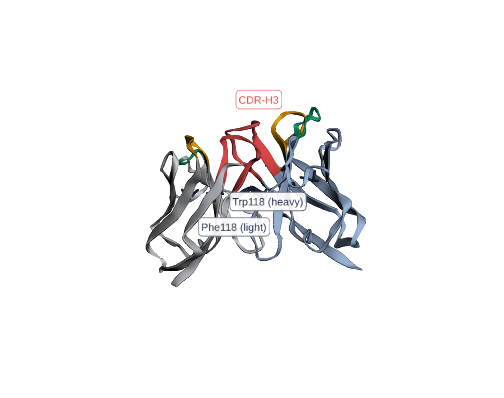
Antibodies appear in structures in two quite different roles (Figure 3):
- As the subject. The paper is about the antibody: for example, a neutralising antibody against a viral spike, or a therapeutic antibody and its epitope.
- As a tool. The paper is about something else, usually a small or flexible membrane protein, and the antibody is added to make it bigger, more rigid or easier to align in cryo-EM. Examples include the G-protein stabilisers Nb35 and scFv16, anti-BRIL Fabs and synthetic "sybodies". These are often called fiducials or chaperones.
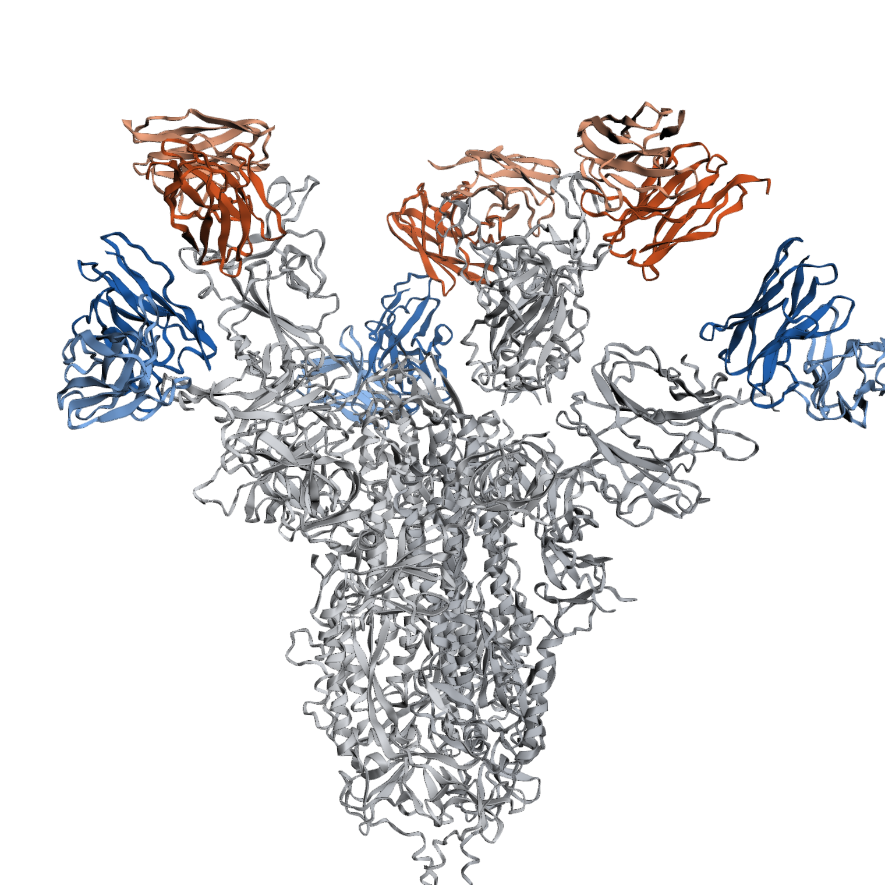
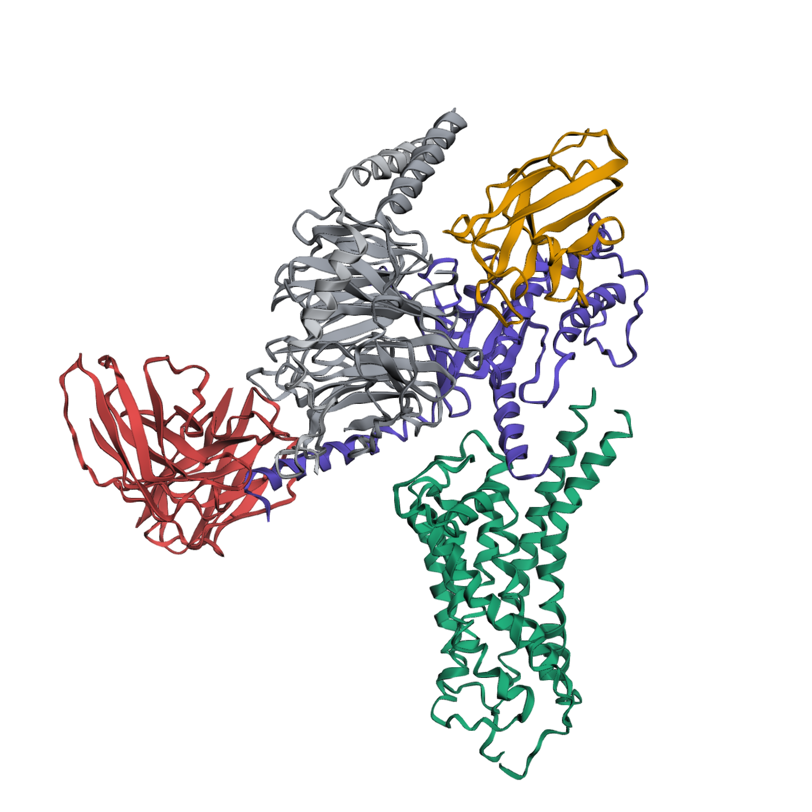
How many antibody structures are we talking about?
Antibody V domains at 3–5 Å were a trickle until about 2016, nearly all from X-ray crystallography. Since 2018, cryo-EM has delivered about 1,500–2,500 per year (Figure 4A). Antibodies used as tools rose from about 1% of all cryo-EM entries in 2017 to 6–8% in 2021–25. Among membrane-protein entries the figure is 16–21% (Figure 5). About half of the tool uses are the same two G-protein stabilisers, Nb35 and scFv16. Engineered fiducials (BRIL-Fab, NabFab, megabodies, legobodies, sybodies) grew from 7 entries in 2020 to 85 in 2024, and 2,273 tool-antibody entries came from 447 different senior authors.
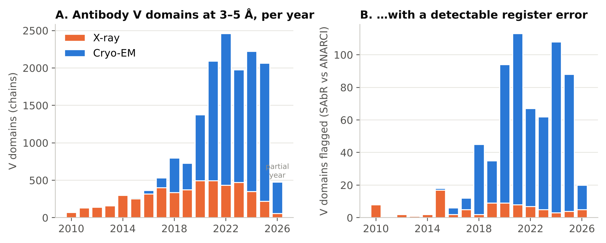
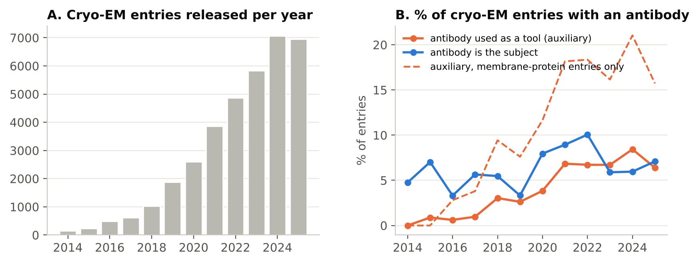
2The 2024 study that started this
Sánchez Rodríguez, Simpkin, Chojnowski, Keegan and Rigden (IUCrJ 11, 938, 2024) asked how many register errors sit in the PDB. Their tool, conkit-validate, works in four steps:
- Predict the residue–residue contact map of each chain with AlphaFold2.
- Compute the contacts actually present in the deposited model.
- Use a classifier to find stretches where the model's contacts match the prediction better after shifting the sequence by k positions.
- Report those stretches as putative register errors.
They screened X-ray and cryo-EM entries at 3–5 Å deposited up to 5 April 2022: 19,310 entries retrieved and 16,662 analysed. They reported 12,674 putative register errors in their Supplementary Table S1, roughly one flagged entry in six. The unit matters. An entry is a whole deposition, with a median of about 1,270 residues in this resolution range. Counted per domain, the same flags cover 3.75% of non-immunoglobulin domains, or 2.9 errors per 10,000 residues (H1b). They estimated about 87% of flags are confirmed where a later high-resolution structure is available. Known false positives include fold-switching proteins and genuinely ambiguous registers.
The paper did not break errors down by protein family. That is where this analysis started.
3Data and methods
This section is written for readers who want to judge the evidence. Full scripts and tables are in the register_error_analysis/ folder of the SAbR repository (Appendix).
3.1 Rebuilding the denominator
Table S1 lists only the flagged chains, not every chain that was analysed. To compute rates, I rebuilt the set of eligible entries from the RCSB PDB search API: X-ray or EM, 3.0–5.0 Å, deposited by 5 April 2022. I kept protein chains of 20–1,000 residues.
A first version also counted 2,114 entries that had been deposited before the cut-off but released after it. The authors never saw these: every flagged entry was released by 30 March 2022. Counting them as "not flagged" understated rates by about 10%. After restricting to entries released by 5 April 2022, the denominator is 19,558 entries and 181,914 chains. 99.7% of the Table S1 errors map onto it. Rates here are therefore slightly lower than the authors' own: chains they could not analyse (no confident AlphaFold2 model, failures) count as unflagged. That bias works against finding antibodies clean, because AlphaFold2 predicts antibody domains confidently.
3.2 Fold classes and antibody identification
- Fold classes. Domains were assigned with ECOD (v295.2), which covers 20,414 of the entries. Each error was placed in the domain it overlaps most, which places 86% of them. CATH was tried first and abandoned: it covers only 12–55% of these chains and almost none of the large cryo-EM complexes.
- Antibodies. ANARCI (an HMM-based numbering tool) was run on all 29,000 unique sequences. A domain counts as an antibody V domain if ECOD calls it a V-set Ig domain on a chain with an ANARCI heavy, κ or λ hit.
- Role. The subject-vs-tool classifier uses rules on titles and chain names, plus a list of known reagents.
3.3 Covariates
For every entry I collected the following.
- Basics. Method, resolution, deposition and release dates, and the primary citation (journal, DOI, authors).
- Map fit. Per-residue fit: Q-score for EM, real-space correlation coefficient (RSCC) for X-ray, from wwPDB validation via the RCSB API.
- Modelling metadata. The recorded starting model (pdbx_initial_refinement_model), the EM fitting protocol, modelling software, and revision history.
- Proxies for pressure:
- Journal tier: Nature/Science/Cell; their sister journals; other journals.
- Entries per paper.
- Competition: distinct other labs depositing the same target within ±6 months.
- Novelty: the target's first year in the PDB.
- Hold time: deposition to release.
"Lab" means the last author of the primary citation.
3.4 Tracing errors through templates
To ask whether errors are copied, I worked in four steps:
- Grouped the 12,674 errors into 2,978 families sharing a sequence window.
- Found every PDB chain, at any resolution and through 2026, containing that window: 319,735 chains in 182,141 entries.
- For the 2,308 families seen in at least two papers, sampled up to 12 entries per family, preferring different papers, and up to 4 chains per entry.
- Superposed each chain on the flagged reference using Cα atoms outside the segment, and called the segment "same register" or "shifted by k".
On the flagged entries themselves, the call reproduces the flag in 98.8% of cases (661/669).
3.5 An AlphaFold-free detector: SAbR vs ANARCI
The 2024 flags have two limitations. They stop in April 2022, and they depend on AlphaFold2, which learned from many of the structures being audited. I therefore built a second detector that uses no structure predictor, just two numbering tools that should agree on a correct model:
- ANARCI numbers each residue from the sequence, by aligning it to an IMGT profile.
- SAbR numbers each residue from the structure. It encodes the backbone geometry of each residue and aligns these embeddings against reference embeddings of the IMGT positions. It does not use the residue identities.
If a stretch is threaded out of register, its backbone sits at IMGT position p while the residue placed there belongs at p ± k. The two numberings then disagree by k across the stretch. A V domain is flagged if it has a run of at least three consecutive residues where the two numbers differ. Figure 6 shows one such run.
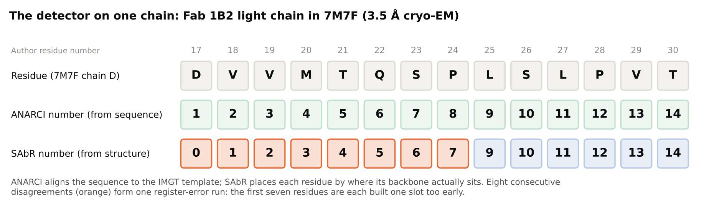
Implementation details:
- Input. Per-chain coordinates came from the PDBe model server, and unmodelled residues from RCSB. SAbR ran on the V region only, with chain type from ANARCI, at about 0.3 s per chain on one CPU core.
- Multi-domain chains. scFvs were run in SAbR's scFv mode. Tandem nanobodies and other multi-domain chains were run with an explicit domain order, giving 807 of 820 multi-domain chains processed.
- Coverage. The scan covers 16,636 antibody V domains (or scFv chains) at 3–5 Å: 6,891 released by April 2022 and 9,745 released after. It also covers 1,038 earlier high-resolution (<3 Å) structures of the same V regions and 693 T-cell-receptor V domains.
- SAbR bugs fixed along the way. Two crashes in SAbR were found and fixed in separate pull requests (Appendix).
Validation against the 2024 flags
On a validation set (all 87 entries with a flagged antibody chain plus 300 random clean antibody entries), the detector performs as follows (Figure 7A):
- It overlaps 73% of the 134 conkit-flagged V-region errors: 84% of framework errors and 92% of errors longer than ten residues.
- It catches at least one run in 91% of flagged chains.
- It agrees with conkit on the size of the shift in 97% of cases.
It is blind inside CDRs. IMGT numbers CDR positions by loop length, so a shift within a loop leaves the numbers unchanged by design. It also fires on 4.7% of chains conkit did not flag. Some of those are errors conkit missed, as later sections show, and some are false positives. The clearest false-positive class is antibodies with framework insertions relative to germline, mainly HIV broadly neutralising antibodies such as 3BNC117, VRC03 and 8ANC195. For these, SAbR and ANARCI legitimately place the insertion differently, mostly in FR3 around IMGT 80–86. They are tracked separately throughout.
As an independent check that uses neither tool, I ranked how well each flagged stretch fits the experimental map among all residues of its own V domain, and compared it with the same positions in clean V domains (Figure 7B). In X-ray structures, flagged stretches sit at the 17th percentile of their domain, against the 35th–38th for controls (p ≤ 0.0003). In cryo-EM the difference is smaller, the 35th–36th against the 41st–45th percentile. At 3–4 Å, Q-scores struggle to tell a shifted side chain from a correct but poorly resolved one.
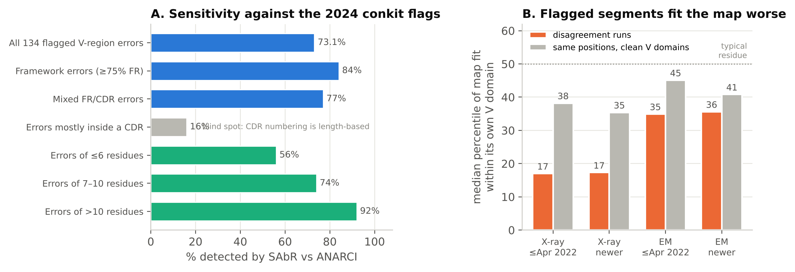
3.6 Statistics
- Unit. One antibody V domain (or one scFv chain).
- Outcome. Whether it is flagged.
- Models. Logistic regressions adjusted for method × resolution bin, deposition period, chain type and domain length. Standard errors are clustered by PDB entry, because copies within an entry are not independent.
- Within-entry comparisons. Conditional logistic regression or Mantel–Haenszel.
- Lab clustering. A parametric bootstrap of between-lab dispersion.
To compare domains of different lengths per residue, I used a complementary log-log model with an offset for domain length, P(flag) = 1 − exp(−h·L), adjusted the same way. Its coefficients are per-residue hazard ratios (HR). Odds ratios (OR) and HRs above 1 mean more errors. 95% confidence intervals are in parentheses, and "n.s." means not significant. "Snapshot" means released by April 2022, the 2024 study's cut-off, and "newer" means released after.
4First look: are antibodies unusually error-prone?
The first question was simple: in the 2024 data, do antibodies carry more register errors than other kinds of protein domain? Figure 8 shows they carry fewer.
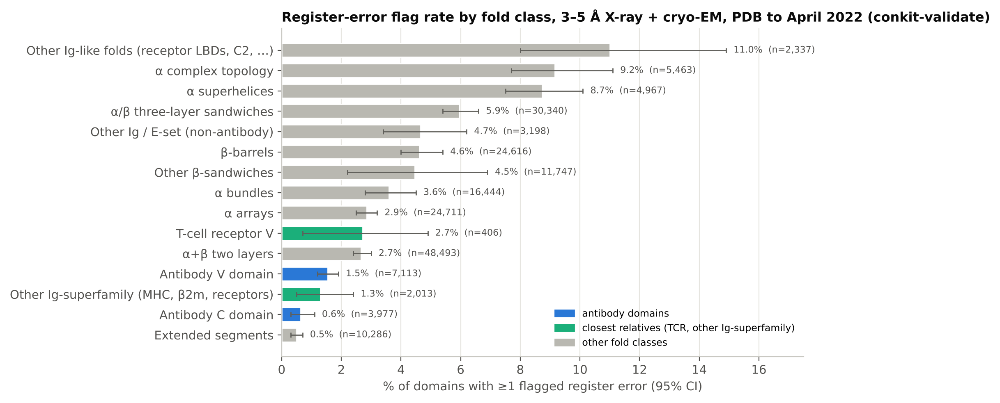
That looked like the end of the story. But splitting by deposition year showed something odd (Figure 9):
- Other domains drifted down, from 4–8% flagged a year in 2010–14 to 2.3–3.1% in 2019–21.
- Antibody V domains were flagged in fewer than 1% of cases in every year from 2013 to 2018, with at most three flagged domains a year. The rate rose to 1.4% in 2019 and then to 3.1% in 2020 and 2.9% in 2021. Over the same years their cryo-EM share went from 26% (2017) to 64–80%.
- The same comparison adjusted. Against other domains of the same year, method, resolution and length, antibodies had 0.1–0.3 times the expected number of flags in 2014–18 and 0.58 in 2019. In 2020 they had 1.27 times (0.92–1.70), and in 2021 1.58 times (1.14–2.12).
Grouped into eras, antibodies went from twelve-fold less likely to be flagged than everything else (≤2017, adjusted OR 0.08) to significantly more likely (2020–22, OR 1.45, 1.01–2.07). That reversal drove most of what followed.
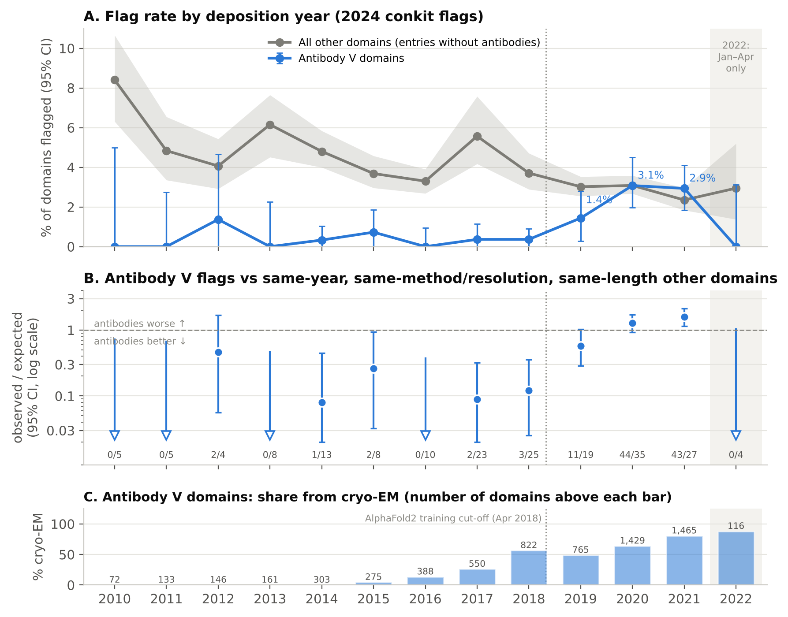
5The hypotheses, one by one
The hypotheses fall into four groups:
- A. When errors happened, and why rates changed.
- B. Whether they reflect carelessness or competitive pressure.
- C. How they spread and persist.
- D. Exactly where in the molecule they are made.
Several hypotheses were first tested on the 2024 flags and then retested with the new detector. Where the two disagree, I say so and explain why.
A. When did errors happen, and why did rates change?
Antibodies are intrinsically more error-prone than comparable folds
✗ RejectedThe idea. Antibody V domains are β-sandwiches made of long, regular strands. Shifting a strand by two residues keeps its alternating inside/outside pattern, so register errors might be easy to make there and hard to spot.
Test. Compare flag rates across ECOD fold classes in the 2024 data, adjusting for method, resolution, year and length (Figure 8). Then, with the new detector, compare antibody V domains with T-cell-receptor V domains, which share the fold but come from different labs and practices.
Result. In the 2024 data, antibody V domains are among the cleanest folds and indistinguishable from other Ig-superfamily members. The TCR comparison failed for a technical reason:
- SAbR's TCR mode is documented as experimental.
- It disagrees with ANARCI systematically in the CDR2/FR3 region (IMGT 57–74): α chains by +4 and β chains by −1, in 75% of runs.
- So 52–85% of TCR domains "disagree", against 1.4–5.3% of antibodies (OR 0.006). That says nothing about TCR model quality.
Antibodies are not intrinsically error-prone. The comparison with TCRs cannot be made with the SAbR detector. With the 2024 flags, antibody V domains and other Ig-like domains of the same length are flagged at similar rates (H1b).
Antibodies only look clean because V domains are short
↻ Partly, recent cryo-EM onlyThe idea. A V domain is about 112 residues long. The headline "one in six" counts whole entries, whose median size is about 1,270 residues. A longer stretch of chain has more chances to contain an error. So a low per-domain rate for a short domain could hide a high per-residue rate, and antibodies might be worse than other proteins once length is accounted for.
Test. Using the 2024 flags, I compared like with like in four ways:
- the same data counted per entry, per chain, per domain and per residue;
- domains of the same length only (100–130 residues), and every class re-weighted to the antibody V length distribution;
- the per-residue hazard model from Section 3.6, adjusted for method × resolution and era, overall and by era;
- a control for the AlphaFold2 blind spot (H3), labelling each protein by whether it was already in the PDB before the training cut-off. For non-antibody chains this uses the UniProt accession or exact sequence; for antibodies, the exact V region.
Result (Figure 10):
- Units first. The same flags give 16.2% of entries, 5.4% of chains, 3.75% of non-immunoglobulin (non-Ig) domains and 1.55% of antibody V domains. Per 10,000 residues there are 2.9 errors in non-Ig domains and 1.7 in antibody V domains.
- Pooled over all years, antibodies are lower even per residue. Flag risk rises with length, roughly as length0.75. Among domains of the same length (100–130 residues), however, 1.55% of antibody V domains are flagged against 3.9% of non-Ig domains. The per-residue hazard ratio, antibody V vs non-Ig, is 0.58 (0.44–0.76), and 0.43 (0.32–0.57) at matched length.
- By era the picture flips. The ratio is 0.10 for structures deposited up to 2017 and 0.35 for 2018–19, but 1.41 (1.02–1.95) for 2020–22 and 1.59 (1.12–2.25) for cryo-EM in 2020–22. Within the same cryo-EM maps (2020–22 entries containing antibodies), antibody V domains carry 3.6 errors per 10,000 residues against 1.4 for the other proteins in those maps.
- About half of that recent excess is the detector's blind spot.
- 72% of 2020–22 cryo-EM non-Ig domains belong to proteins already in the PDB before AlphaFold2's training cut-off, against 21% of antibody V domains.
- conkit flags re-solved non-Ig proteins less often than new ones: 2.0 against 2.5 errors per 10,000 residues.
- Restricted to proteins new to the PDB, antibody V domains have 1.19 times the per-residue hazard of non-Ig domains (0.80–1.77), or 1.21 in cryo-EM (0.78–1.87). Neither is significant.
- Against their closest relatives, antibodies are typical. Compared with other Ig-like domains of the same length (TCRs, MHC, receptors), the ratio is 1.18 (0.75–1.86).
- Re-solved antibodies fare worse. Antibody V domains whose exact V region was already in the PDB are flagged more often than new ones (5.8 against 3.0 errors per 10,000 residues). That fits copying from old templates (H12).
One uncertainty remains. conkit under-detects antibody errors even after the cut-off: on the same cryo-EM 2020–22 V domains, the SAbR detector flags 8.2% against conkit's 3.6%. Nothing tells us how much conkit misses in other proteins, which leaves two limiting cases:
- If conkit misses non-antibody errors at a similar rate, the ratios above stand.
- If it misses almost none, the true antibody excess in recent cryo-EM could be as large as about 2.7 times per residue.
Settling this needs an AlphaFold-independent register check applied to all proteins. The SAbR detector works only on antibodies, so its rates (such as 7.7–8.4% of cryo-EM V domains in 2018–21) cannot be set against the 2024 study's all-protein figures.
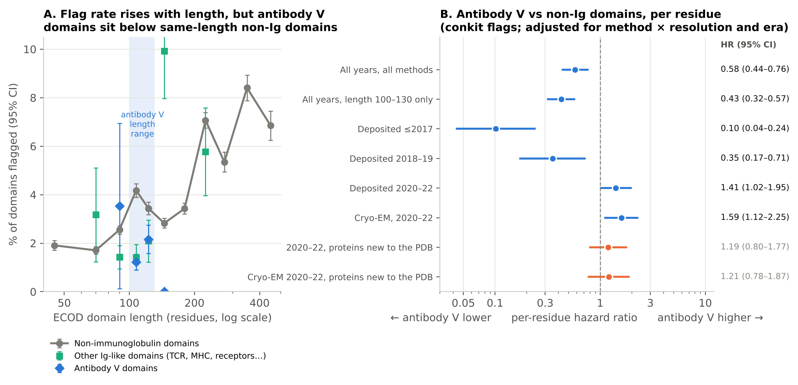
Across the archive, antibody V domains are less error-prone than other proteins, even per residue and at matched length. For 2020–22 depositions they are 1.4–1.6 times as error-prone per residue as non-immunoglobulin domains. Most of that gap reflects the 2024 detector seeing fewer errors in re-solved proteins: among proteins new to the PDB it is 1.2 times and not significant. Antibodies are no worse than other Ig-like domains. Whether recent cryo-EM antibody models are genuinely worse than other new proteins of the same size cannot be settled without a predictor-independent check of all proteins.
Antibody errors surged in 2020–22
↻ RevisedThe idea. Figure 9 shows antibody flags rising from under 1% a year through 2018 to about 3% in 2020–21 (eight-fold between the ≤2017 and 2020–22 eras), while other folds improved. Is that a real deterioration, and is it simply the switch from X-ray to cryo-EM?
Test 1 (2024 data). Split the change into two parts. The compositional part comes from the shift in method and resolution mix. The within-stratum part is change at fixed method and resolution.
Result 1. Of the +2.53 percentage-point rise, 46% was compositional and 54% within-stratum: EM went from 0.48% to 3.42% and X-ray from 0.35% to 1.47%. That looked like a genuine deterioration within both methods.
Test 2 (new detector). Repeat with the AlphaFold-free detector, which covers 2018 to 2026 at half-year resolution.
Result 2. The picture changes (Figures 11 and 12):
- Before 2020. The cryo-EM antibody error rate was already high: 6.3% before 2018 and 8.4% in 2018–19. There was no rise within cryo-EM in 2020–21.
- The apparent rise from ≤2019 to 2020–21 (3.1% → 6.1% overall) is entirely compositional: the cryo-EM share went from 25% to 71%, and the within-stratum contribution is zero.
- From 2021H2 onward the cryo-EM rate fell abruptly, from 13.2% (2020H2) and 9.5% (2021H1) to 3.4% (2021H2), and has stayed at 2.5–7.6% since. That fall is entirely within-stratum (−2.9 points), a real improvement in practice.
- X-ray stayed flat at 1.3–1.9% throughout.
Relative to 2018–19, the adjusted odds of an error were 0.89 in 2020–21, 0.37 (0.24–0.58) in 2022–23 and 0.51 (0.32–0.80) in 2024–26.
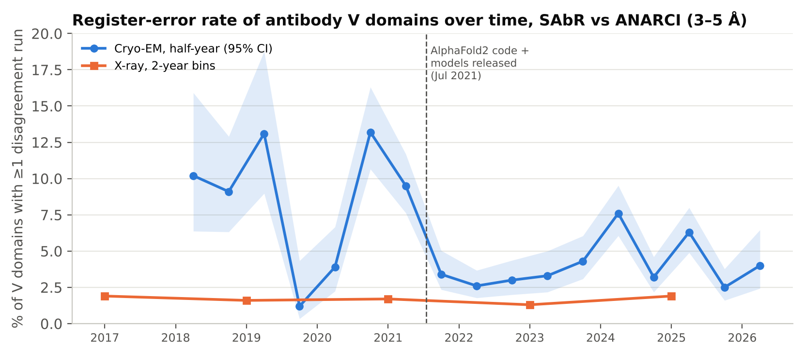
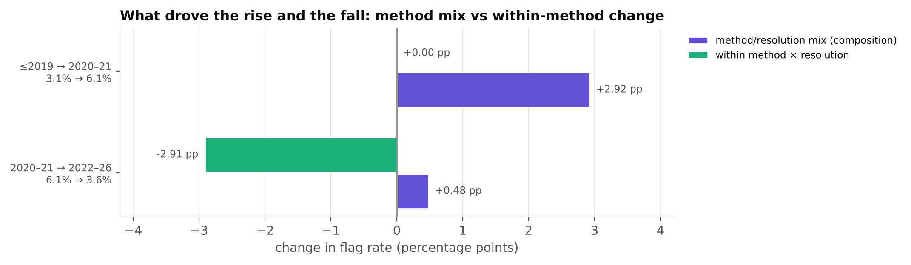
Why do the two detectors disagree about the pre-2018 period? That is the next hypothesis.
There was no deterioration in modelling practice in 2020–22. Cryo-EM antibody models were error-prone from the start (about 8%), and the antibody field moved to cryo-EM in 2020–21. From late 2021, cryo-EM antibody models became markedly better.
The 2024 detector's low early rate reflects reality
✗ Rejected: it is an artifactThe idea. conkit-validate checks each model against an AlphaFold2 prediction. AlphaFold2 was trained on PDB structures released before 30 April 2018. For a pre-2018 structure, AlphaFold2 may simply reproduce the deposited model, errors included, so the model and the prediction agree and nothing is flagged. Antibodies are a worst case: thousands of near-identical V domains were in the training set.
Test. Take framework register errors found by SAbR in the snapshot, and ask what fraction conkit also flagged, split by whether the structure was released before or after the cut-off. As a control, check whether SAbR's own rate changes across the cut-off.
Result (Figure 13):
- conkit caught 10% of SAbR-detected errors in structures released before the cut-off, against 40.5% after.
- For X-ray alone the contrast is 8% vs 62%.
- SAbR's own X-ray flag rate is flat across the cut-off (1.4% vs 1.6%). So the error rate did not change; conkit's ability to see errors did.
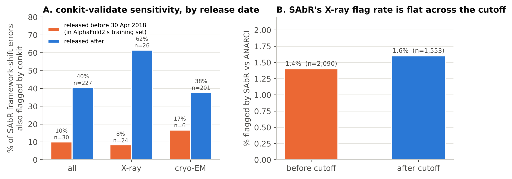
Much of conkit's "rise" in antibody errors reflects the detector gaining sight of errors after AlphaFold2's training cut-off, not models getting worse. This matters beyond antibodies: an AlphaFold2-based audit is weakest on the older, heavily reused structures where errors do the most downstream damage (H12).
Cryo-EM models are worse than X-ray models at the same resolution
✓ SupportedThe idea. A 3.5 Å cryo-EM map and a 3.5 Å X-ray map are not equivalent. Cryo-EM resolution is a global average, and antibodies bound at the edge of a large complex often sit in worse-than-average density. X-ray models of antibodies are also more often built from a close high-resolution template.
Test. Regress flags on method within matched resolution bins, with and without the V domain's own local map-quality score (Q-score or RSCC, z-scored within method).
Result. Cryo-EM carries 5.8 times the odds of X-ray in the snapshot (3.5–9.5) and 3.3 times in newer structures (1.8–6.1). Adding local map quality changes nothing (5.9 and 3.3), and local map quality itself is not predictive: OR 1.10 and 1.04 per standard deviation (Figure 14). Within cryo-EM, the recorded fitting protocol matters. Models built ab initio (de novo into the map) were flagged less often than those whose protocol was not recorded (OR 0.22, 0.08–0.58). In newer structures, flexible-fitting protocols had the highest raw rate (7.7%).
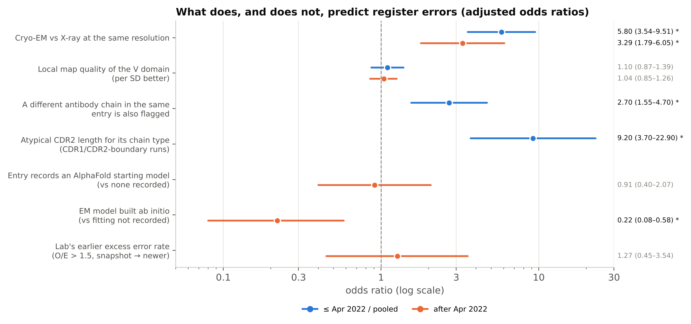
At the same nominal resolution, cryo-EM antibody models are 3–6 times as error-prone as X-ray models, and the gap is narrowing. It is not explained by how well the V domain fits the map overall. The problem is local and specific, as H17 and H18 show.
Poor local maps explain the errors
✗ Mostly rejectedThe idea. The most obvious explanation: errors happen where the map is bad.
Test. Include the V domain's average local fit (z-scored Q-score or RSCC) in every model. This is partly circular, because a misregistered stretch itself fits worse. Even so, if bad maps drove errors, the coefficient should be strongly protective.
Result. It is not. The odds ratio for flags overall is 1.0–1.1 per standard deviation in both eras, and the gap between cryo-EM and X-ray is unchanged by it (Figure 14). The one exception is the CDR3–FR4 junction error (H18), which does track local map quality (OR 0.70 per SD better).
Domain-average map quality does not predict whether a V domain carries a register error. What matters is where in the domain the modeller faced a decision they could not resolve from the map: chain ends, gaps and loop boundaries. A domain-wide average does not capture that.
B. Is it carelessness or competitive pressure?
The working hypothesis behind much of this investigation was that time pressure, the fear of being scooped, leads authors to model quickly, and that the shortcuts land on the parts they care least about. That predicts more errors in antibodies used as tools, in high-impact and contested work, in fast releases, and in the SARS-CoV-2 rush. Each prediction was tested and each failed.
Authors are careless with antibodies that are only tools
✗ RejectedTest. Compare antibody V domains in "tool" entries with those in "subject" entries, adjusting for method, resolution, era, length and local map quality. Then make the cleanest comparison available: within the same 40 entries that contain both a reused tool reagent and another antibody chain.
Result (Figure 15):
- 2024 data. Tool 1.58% vs subject 1.62% (OR 0.97, 0.49–1.91).
- New detector, snapshot. Tools are flagged less often: EM 3.3% vs 8.1%, adjusted OR 0.30 (0.17–0.54).
- New detector, newer structures. No difference (OR 0.79, n.s.).
- Within the same entries. The reused reagents (Nb35, scFv16, BAG2, NabFab, sybodies and others) were flagged in 0 of 67 chains, against 3 of 67 for the other antibodies.
In the 2024 data, tool antibodies were also better resolved locally (EM Q-score z of +0.50 vs −0.30). When an antibody is a tool, the error in the entry tends to be in its target instead (3.55% vs 1.96%). Those targets are mostly α-helical membrane proteins, one of the most error-prone fold classes.
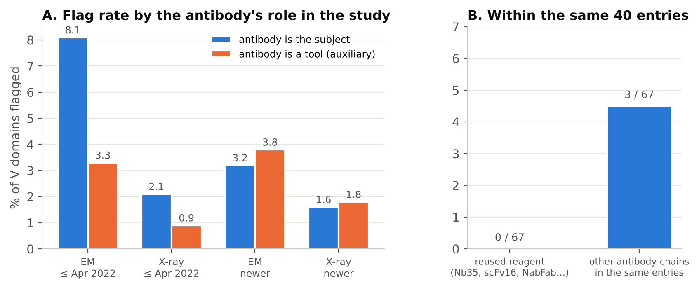
Why would tools be better? Because the same tool is used again and again. Nb35 and scFv16 are always docked from an existing, validated model, and tool antibodies are selected for rigid, well-ordered binding. Once template availability is accounted for (H11), the role effect disappears in both data sets.
One caveat: scFv16, run in scFv mode as a two-domain chain, does carry two recurring identical disagreements since 2022. One is in FR1 (4 entries, 2 labs) and one in CDR3 (2 entries, 2 labs). Even a standard reagent can carry a copied error.
There is no evidence that authors model antibodies less carefully when the antibody is not what they care about. If anything, the opposite holds, because tool antibodies come with good templates.
Scooping pressure: high-impact papers, many structures, competition, novelty, speed
✗ Not supportedThe idea. Groups racing to publish in top journals deposit many structures quickly. If a target is new or contested, the pressure is higher still.
Test. One multivariable model per era includes all of the following, plus the standard covariates:
- journal tier;
- log entries per paper;
- number of other labs depositing the same target within ±6 months;
- target novelty;
- hold time;
- SARS-CoV-2 status;
- local map quality.
Result (Figure 16). No proxy for pressure is consistently associated with more errors, and several point the other way:
- Journal. Nature/Science/Cell papers: OR 0.94 (snapshot) and 0.53 (newer). Their sister journals: 0.92 and 0.57 (0.35–0.92).
- Structures per paper. High-impact papers do deposit more (3.7 entries per paper vs 2.6), but more entries per paper does not mean more errors per structure: OR 1.04 and 0.85 per doubling.
- Competition. One or two competing labs: no effect in the snapshot (1.06), fewer errors in newer structures (0.49).
- Novelty. A first-year target carried more errors before 2022 (OR 1.60, 1.03–2.47), but not after (0.91).
- Speed. Fast releases are not worse: 31–90 days on hold gives OR 0.17 in newer structures.
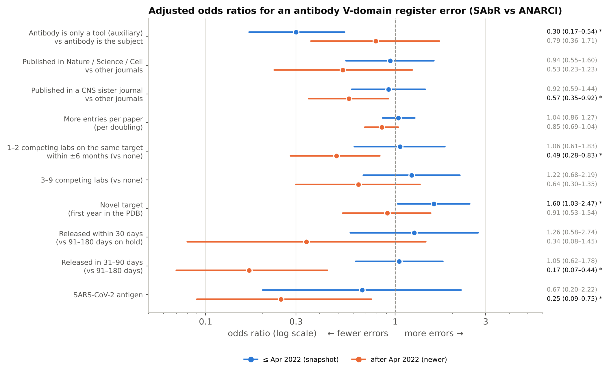
A cautionary episode
An early version of this analysis found a striking interaction: auxiliary antibodies in high-impact papers had 38 times the odds of an error (p = 0.001). It disappeared once journal names were normalised. Abbreviations such as "Nat.Struct.Mol.Biol." had been left in the "other" tier, and PNAS, eLife and EMBO J had been put in the high tier. The whole effect came from four entries of a single eLife paper. Small, impressive interaction effects in this kind of data deserve suspicion.
In the 2024 data, non-antibody domains did show the predicted pattern, modestly:
- Nature/Science/Cell: OR 1.28. Sister journals: 1.29.
- Novel targets: 1.23. Moderately contested targets: 1.28–1.36.
- The largest effect was entries held for more than a year (2.48), which mostly reflects slow, older X-ray projects.
These effects are consistent with time pressure, but equally with harder, newer projects being published in prominent journals.
Within the limits of the proxies, nothing suggests that antibody register errors come from rushing. For other proteins in the 2024 data there is a weak signal that could reflect pressure or difficulty.
The SARS-CoV-2 rush produced errors
✗ RejectedThe idea. In 2020, dozens of labs raced to solve antibody–spike complexes. If anything was rushed, these were.
Result in the 2024 data. At first it looked confirmed: 6.4% of SARS-CoV-2 antibody V domains in 2020 were flagged, against 1.4% for other viral antigens. Looking closer changed that:
- The 31 flagged domains sat in 13 entries from just 5 of the 40 labs, and 7 of those entries came from one group.
- Those maps were locally worse: Q-score z −0.78 vs +0.11.
- After adjustment, the SARS-CoV-2 × 2020 interaction was not significant (OR 2.13, 0.47–9.7).
Result with the new detector (Figure 17):
- 2020. Cryo-EM antibody-of-interest structures: SARS-CoV-2 11.2% vs other viral antigens 11.0%. Both high, no difference.
- 2021. SARS-CoV-2 3.6% vs other viral 7.9% (adjusted OR 0.29, 0.11–0.77).
- Newer structures. SARS-CoV-2 1.7% vs 3.8% for all other subject antibodies.
The 2020 spike in the 2024 data is a mix of a few labs, worse maps, and the AlphaFold2 sensitivity artifact from H3. Other viral antibodies deposited in the same years had many more pre-2018 relatives in AlphaFold2's training data, so their errors were less visible to conkit.
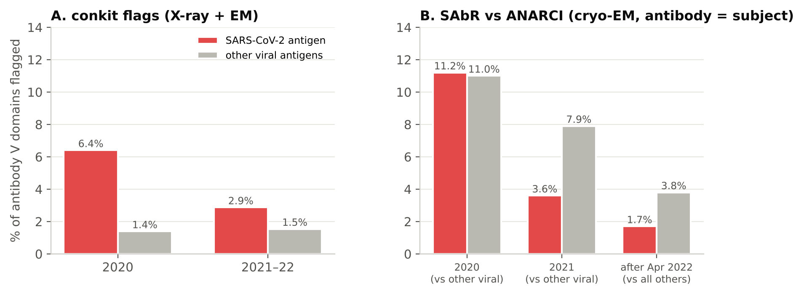
SARS-CoV-2 structures were not unusually error-prone. 2020 was a bad year for all cryo-EM antibody models, and SARS-CoV-2 structures improved faster than the rest afterwards.
Antibody errors come with errors elsewhere in the entry (a sloppy entry)
↻ RevisedThe idea. If rushing or a careless modeller were behind errors, the antigen in the same entry should be affected too.
Result in the 2024 data. Antibody errors do not co-occur with antigen errors:
- 6 entries had both flagged, against 5.6 expected by chance (Mantel–Haenszel OR 1.09, 0.45–2.65).
- They do co-occur between an antibody's own heavy and light chains (OR 3.8, 1.6–9.1).
Result with the new detector:
- A V domain is 2.7 times as likely to be flagged when a different antibody chain in the same entry is flagged: 10.3% vs 2.9% (OR 2.7, 1.5–4.7).
- Where an entry contains several identical copies of the same antibody and at least one is flagged, all copies are flagged in 86% of cases (147 of 170 groups).
- 34% of all disagreement runs are the same error repeated in another entry of the same paper.
Errors are local to how the antibody was built, not to the entry as a whole. A model built once is copied to every symmetry copy and reused across a paper's entries, so a single error becomes several deposited errors. Counted as independent events (one per paper × antibody × position × shift), 666 disagreement runs reduce to 303 events.
Errors cluster by laboratory
✓ Supported, weakly persistentTest. Fit an entry-level model of "any flagged chain" on method × resolution, era and size. Compare the observed between-lab dispersion with simulations under that model.
Result:
- 2024 data. Dispersion is 3.0 times the expected value across 873 labs (95% simulation range 0.90–1.12). The 10% of labs with the highest observed-to-expected ratio hold 18% of flagged entries, against 4% expected.
- New detector. Dispersion is 3.2 times expected across 213 labs with at least five antibody entries.
- Persistence. A lab's excess in the snapshot only weakly predicts its rate in newer structures: 6.0% vs 4.7%, OR 1.27 (0.45–3.54).
Lab practice is a stronger signal than journal, role or speed. Its weak persistence across eras fits a field that changed its tools around 2021 (H16).
C. How do errors spread and persist?
A prior high-resolution structure of the same antibody protects against errors
↻ RevisedThe idea. If the same V region was solved earlier at better than 3 Å, a modeller can dock that structure instead of building from scratch.
Result in the 2024 data. A prior template is the strongest antibody-specific predictor found: OR 0.32 (0.14–0.76). It explains why tool antibodies looked clean (44% have one, against 24% of subject antibodies).
Result with the new detector. The template is not protective on average: 4.1% flagged with one, 4.1% without. The difference comes from the templates themselves:
- Among 1,038 high-resolution templates scanned, 1.6% carry a SAbR-detectable error.
- Built from a clean template, 0.8% of later 3–5 Å models are flagged (n = 3,651).
- Built from a flawed template, 93% are flagged (n = 140). Excluding the HIV framework-insertion antibodies, where the "error" may be a numbering convention, the figure is 74% (n = 39, 9 families).
- Of flagged chains with a scanned template, 82% carry the identical error: same start position within ±2 and same shift.
Why did conkit see protection? Because of H3. Flawed templates are mostly pre-2018, AlphaFold2 learned them, and conkit therefore could not see the copied errors in their descendants.
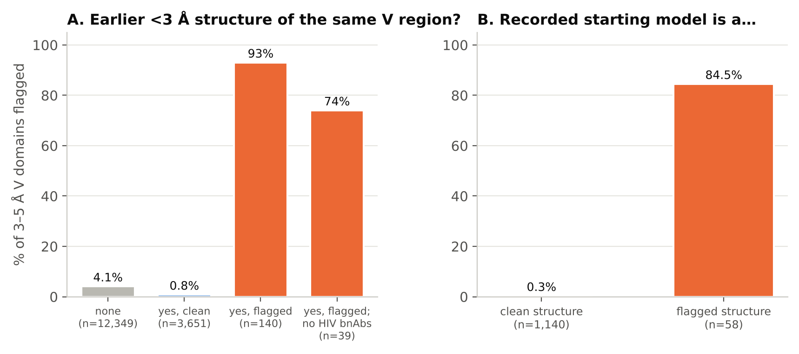
A template does not protect in itself. It transmits its register, correct or not, and most templates are correct, which is why templated models are usually clean.
Bad templates are reused and their errors copied
✓ Supported stronglyTest 1: recorded starting models. 1,198 chains come from entries that name an earlier structure of the same V region as their starting model. When that named model is clean, 0.3% are flagged (n = 1,140). When it carries a disagreement, 84.5% are (n = 58), or 61% excluding the HIV antibodies (Figure 18B).
Test 2: structural tracing across the whole PDB, all proteins, 2024 flags:
- In 55% of families seen in at least two papers, the flagged register recurs in two or more papers; in 44%, in two or more labs.
- Of later entries naming a flagged-register template as their starting model, 83% carry the flagged register. Of those naming a template in the other register, 0% do.
- Where both registers have been deposited (815 families), the flagged register fits the experimental map worse in 67% (p = 5 × 10−32), or 79% using only structures at ≤3 Å.
- When the error came first, a structure with the correct register took a median of 4.2 years to appear. Even afterwards, 19% of new papers still used the erroneous register.
- Reuse shows no quality filter. In the 111 contested families where the flagged register fits better (so the flag is probably wrong), later papers copy it at a similar rate: 20% vs 26%.
Among high-resolution antibody templates, the flagged ones fit their own maps poorly in the flagged stretch: median 13th percentile of their chain, with 83% below the 25th. So these are real errors in good structures, not detector noise.
Case study: Fab 1B2, one template copied for eight years
Fab 1B2 binds modules of bacterial polyketide synthases (DEBS, Lsd14, rifamycin synthetase) and is used by several labs to help solve these large enzymes. Its light chain begins with an FR1 sequence (DVVMTQSPLSLPVT…) that it shares with other κ antibodies. Two of those are relevant here:
- Fab 3A6, solved by the same lab in 2018 (6MLK, 2.45 Å X-ray);
- Fab DH4, solved by the Frost lab in 2020 (7KRA, 7KTX, cryo-EM).
Over the identical first seven residues, the first 1B2 structure (6C9U, 2.09 Å X-ray, 2018) differs from the others. Superposed on the framework, the backbone positions that hold Asp1, Val2, Val3 … in 6MLK hold Val2, Val3, Met4 … in 6C9U (Figure 19). 6C9U is threaded one residue ahead, with the register restored at Pro8. The other antibodies with the same sequence, and AlphaFold2, use the other register. SAbR, which ignores sequence and reads only the backbone, places Asp1 of the 1B2 chains before IMGT position 1 (Figure 6). Every later 1B2 structure carries 6C9U's register.
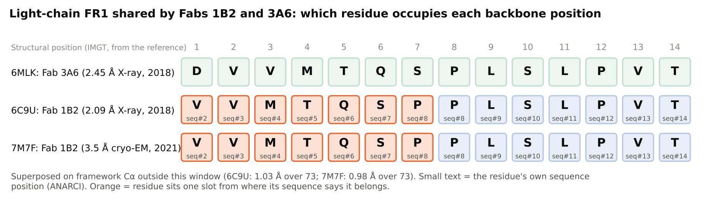
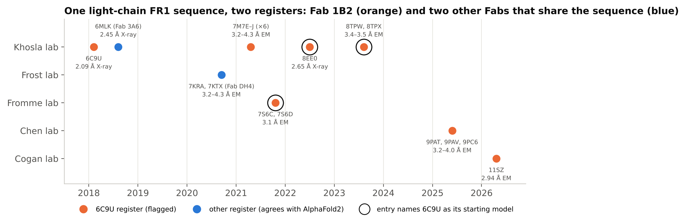
Copying from templates is the main way errors spread. A handful of flawed high-resolution templates (18 of 1,038 scanned) seed a disproportionate share of the copies. Inherited errors fell from 29% of flags in the snapshot to 12% in newer structures, consistent with fewer old experimental templates being reused.
The 7MXL / REGN5713 flag is a false alarm that spread across ten labs
✗ Rejected: the flag is rightThis hypothesis came from a bug, and correcting it is instructive.
The first version of the template tracer compared each entry with the first chain carrying the error's sequence, not with the chain actually flagged. For the REGN5713 light chain in 7MXL, a 3.2 Å cryo-EM structure of the birch-pollen allergen Bet v 1 with three Fabs, that meant comparing against chain K, a correct copy of the same κ constant domain. The tracer concluded that the "flagged" register was everywhere and the flag was probably wrong. Re-run with the flagged chain as reference (chain B), and checking up to four copies per entry, the story reverses (Figures 21 and 22):
- In chain B, residues 149–158 are not modelled: the rest of strand C, the C–C′ loop and strand C′.
- The stretches on either side are shifted. Residues 140–148 sit one or two positions downstream, and 159–171 sit two positions upstream. The register is restored at Thr172.
- The numbering does not fit the gap: about six positions are physically missing, but ten residues are declared missing.
- The domain's core tryptophan (Trp148 in chain-B numbering) has been pulled out. Its ring is 14 Å from the domain centre, against 3.9 Å for the equivalent residue in chain K, which is buried.
- Chain K, the REGN5715 light chain in the same map with an identical Cκ sequence and no gap, matches a 1.45 Å Cκ structure (7YV1) to 0.74 Å.
- The shifted stretches fit the map worse in chain B than in chain K (Q-score 0.34 vs 0.43, and 0.36 vs 0.48), although the two Cκ domains fit equally well overall.
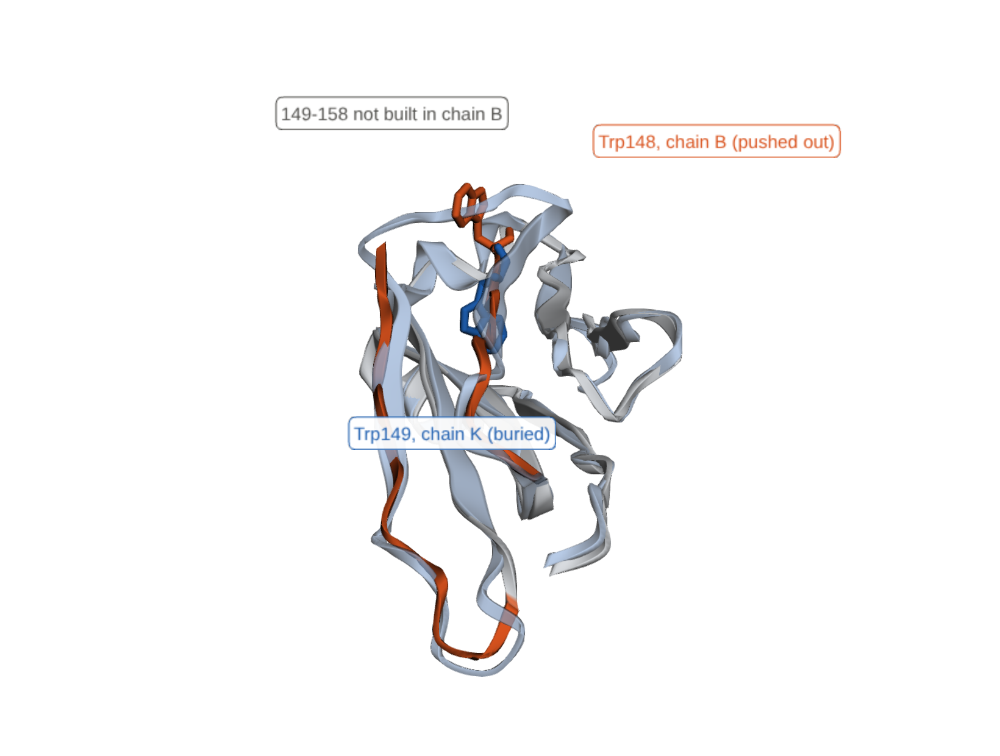
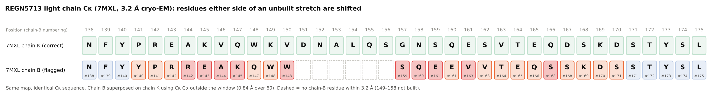
The flag is correct, and the error is a one-off: it was not propagated. It is also a clean example of the most common way errors are made (H17). The episode shows how easily a pipeline choice, here which chain counts as the reference, can invert a conclusion.
Hasty SARS-CoV-2 structures plus bad templates explain most antibody flags
↻ RevisedTest. Classify each of the 165 conkit-flagged antibody chains (87 entries).
| Group | Chains | Entries |
|---|---|---|
| SARS-CoV-2 complex, deposited 2020 | 41 (25%) | 13 |
| SARS-CoV-2 complex, deposited 2021–22 | 28 (17%) | 14 |
| Error copied across labs | 14 (8%) | 12 |
| Error repeated in the same lab's papers | 1 | 1 |
| One-off: antibody reused elsewhere, error not copied | 31 (19%) | 19 |
| One-off: antibody appears in one paper only | 47 (28%) | 29 |
| Could not be mapped | 3 | 3 |
Result. SARS-CoV-2 complexes and cross-lab copying together account for about half of the antibody flags in the 2024 data. However, H8 shows that "SARS-CoV-2" is a label for "cryo-EM antibody structure from 2020–21", not a mechanism in its own right. The SAbR scan also shows that copying is under-counted in the 2024 data, because copies of pre-2018 templates are invisible to conkit (H3, H11).
Copying is a major mechanism. SARS-CoV-2 haste is not. The remaining one-off errors needed their own explanation (Section D).
Errors are rarely corrected
✓ SupportedTest. Check revision histories for "Atomic model" changes since release, and re-run SAbR on today's coordinates.
Result (Figure 23):
- Only 9% of conkit-flagged antibody entries have ever had their coordinates revised.
- Across all proteins in the 2024 data, flagged entries were revised barely more often than unflagged ones: 13.2% vs 10.7%.
- Today, the flagged stretch still disagrees in 62% of unrevised entries and in 31% even of revised ones. The remaining 38% of unrevised ones are mostly CDR-internal errors this detector cannot see.
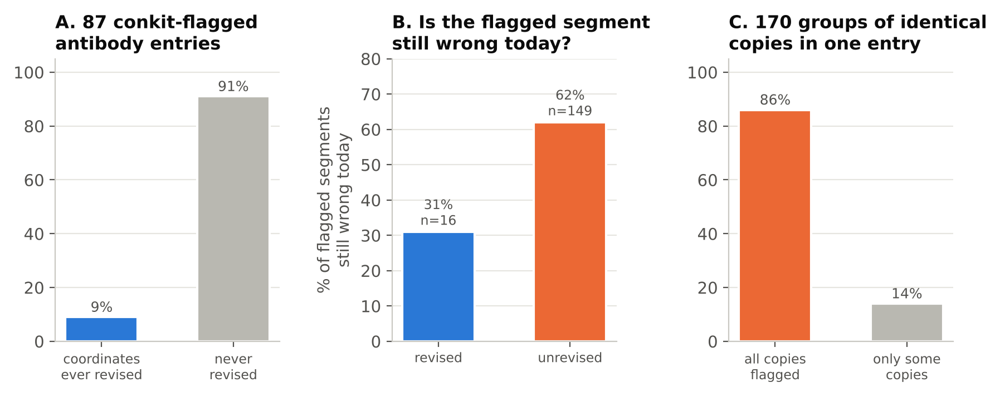
Once deposited, register errors are almost never fixed, and they keep being used: as templates (H12), as training data, and in every downstream analysis.
AlphaFold2 starting models explain the post-2021 improvement
? UnresolvedThe idea. The cryo-EM error rate fell abruptly in the second half of 2021, right after AlphaFold2 code and models became public (Figure 11). Antibody Fvs built from a prediction would not inherit an old template's error, and they model the framework strands accurately.
Test. Compare entries whose recorded starting model is an AlphaFold model with those recording none.
Result. No measurable benefit:
- Any error: OR 0.91 (0.40–2.07), in only 494 records (290 cryo-EM).
- CDR3–FR4 junction errors: 0.34% vs 0.9–1.1%, but not significant after adjustment (OR 0.58, 0.08–4.3).
The test is weak. Most entries do not record a starting model at all, and newer model-building tools that use structure prediction internally (such as ModelAngelo) are essentially never named in PDB metadata. Inherited errors did fall, from 29% to 12% of flags, which is the expected footprint of fewer old templates being reused.
The timing fits and the mechanism is plausible, but the direct test is null, and the PDB's metadata cannot settle it.
D. Where in the molecule are errors made?
If errors are copied, where do the originals come from? Figure 24 shows where in the V domain every disagreement run starts. They are not spread evenly:
- Light chains cluster at the very N-terminus.
- Heavy chains cluster at the N-terminus, in FR3 around IMGT 80–83, and at the CDR3/FR4 boundary (IMGT 105–120).
- Both chain types show a sharp peak at IMGT 120, just inside FR4.
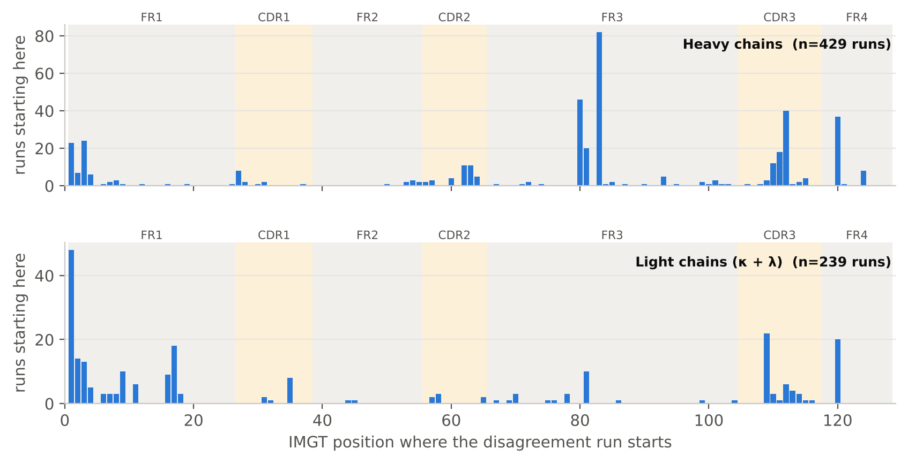
Errors arise at chain ends and next to unbuilt residues
✓ Supported stronglyThe idea. When the first residues of a chain, or a loop in the middle, are too poorly resolved to build, the modeller must decide where the visible density begins. An off-by-one choice shifts every residue up to the next unambiguous landmark. 7MXL (H13) and Fab 1B2 (H12) are both examples.
Test. Compare disagreement runs with position-matched windows in clean V domains, and compare V domains with and without a modelled N-terminus.
Result (Figure 25):
- 11.9% of runs lie within three residues of an unmodelled gap, against 0.9% of matched windows.
- 30% start at the N-terminus, against 2.8% of random windows.
- V domains whose first residues were not built are flagged 18.1% of the time, against 3.4% for domains with a complete N-terminus.
- N-terminal runs fit the map worse than the N-terminal windows of clean domains (X-ray: 9th vs 26th percentile), so these are not artifacts of ragged termini.
This is the largest identifiable source of errors, and growing: 29% of independent error events in the snapshot and 39% in newer structures.
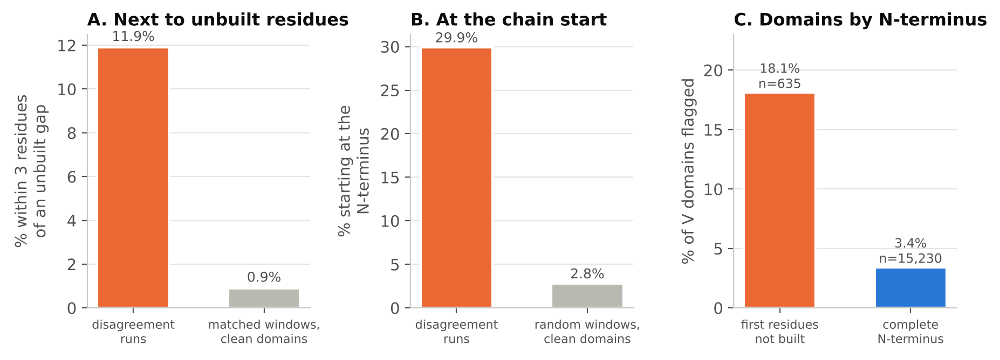
Where the chain runs out, or the map gives out mid-chain, modellers frequently misplace the residues on the edge of what they can see.
The remaining "unexplained" errors are random
✗ Rejected: they are patternedThe problem. After assigning each flagged chain to "copied from a template", "copied from another 3–5 Å structure", "at a chain end or gap" or "HIV insertion convention", 38–39% remained unexplained. I looked at all 271 such runs.
They are not random. Explained runs start mostly in heavy FR3 or FR1 and in light FR1. Unexplained runs start in CDR3 (31–52%) or FR4 (19–25%) in every chain type, and 69% are shifts of +1. The same signatures recur across different antibodies:
- heavy IMGT 120, +1: 35 runs, 9 antibodies;
- heavy IMGT 112, +1: 28 runs, 11 antibodies;
- κ IMGT 120, +1: 17 runs, 9 antibodies.
Three patterns account for most of them (Figure 26).
Pattern 1: the CDR3–FR4 junction (121 runs)
CDR3 is the longest and most variable loop. In heavy chains it ranges from about 5 to over 30 residues. At 3–5 Å its tip is often poorly resolved. If the modeller builds the loop one residue short (or long), the residues after it slide one position along the FR4 β-strand. The strand's first residue is the conserved Trp118 (heavy) or Phe118 (light), which normally packs into the domain core. In a shifted model, a different residue occupies the Trp slot, and the Trp is pushed to the next slot, where its side chain points out of the core (Figures 26B and 27). In 7V2A, a 3.4 Å cryo-EM structure with a 24-residue heavy CDR3, Val117 occupies the Trp118 position. After superposition on the framework (1.39 Å over 80 Cα), the Trp118 side chain sits 11 Å from where it belongs.
Pattern 2: an FR4 bulge after the Trp/Phe–Gly motif (55 runs)
Here the two tools agree through Trp/Phe118 and Gly119, and SAbR then numbers the next residue 121. The strand jumps a position right after the glycine, and residue 120 is stretched across two slots (Figure 26C). This is not a SAbR convention: it occurs in 1 of 1,039 high-resolution templates, against 99 of 15,897 chains at 3–5 Å. Many of the newer cases come from one 2024 paper's symmetry copies (18 of 55 runs from two entries).
Pattern 3: CDR1/CDR2 boundaries (54 runs)
These are strongly associated with an unusual CDR2 length for the chain type. A run touching CDR2 is nine times more likely when CDR2 has a rare length (adjusted OR 9.2, 3.7–22.9; heavy chains 2.6% vs 0.4%; Figure 29). Light chains show the same pattern with CDR1. λ chains with an eight-residue CDR1 are flagged 12.3% of the time, against 1.9% for the common nine. κ chains with an 11–12-residue CDR1 are flagged about 5% of the time, against 2.7% for the common six.
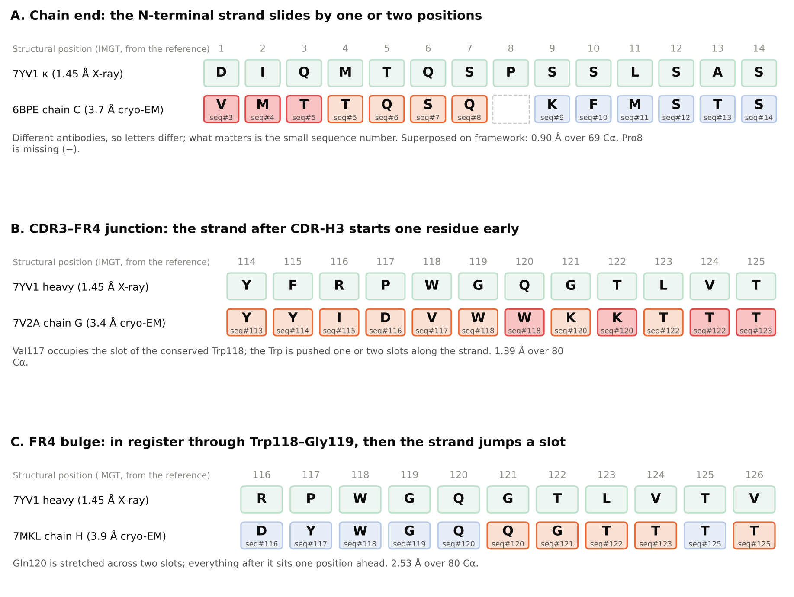
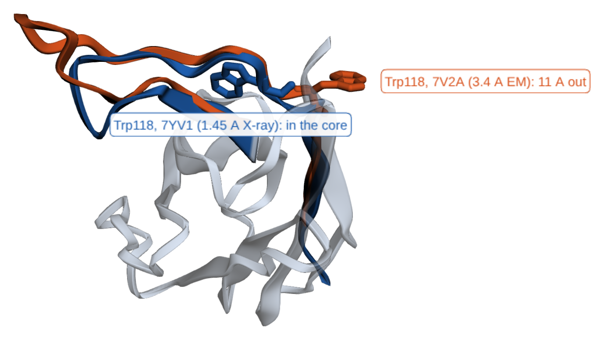
Are these real errors, or numbering artifacts?
Three independent checks say real:
- A structure-only test. Count Cα atoms within 10 Å of the side chain that ANARCI calls Trp/Phe118. This uses no map and no numbering tool beyond the sequence. A buried Trp has 15–20 such neighbours. As Figure 28 shows, the anchor is exposed (fewer than 14 neighbours) in:
- 0% of high-resolution templates;
- 2% of clean X-ray domains and 7% of clean cryo-EM domains;
- 38% of CDR3–FR4 junction runs, in both X-ray and cryo-EM;
- 17% of FR4-bulge runs.
- X-ray maps disagree with the deposited register. Ranked within their own V domain, the stretches fit worse than the same windows in clean domains: FR4 bulge 6th vs 37th percentile; CDR3–FR4 junction 18th vs 46th; CDR2 boundary 12th vs 35th. At 3–4 Å, cryo-EM Q-scores cannot discriminate (48th vs 52nd), so the structural test carries the cryo-EM evidence.
- Rarity at high resolution. The FR4 bulge, for example, occurs in 0.1% of high-resolution templates, against 0.6% at 3–5 Å.
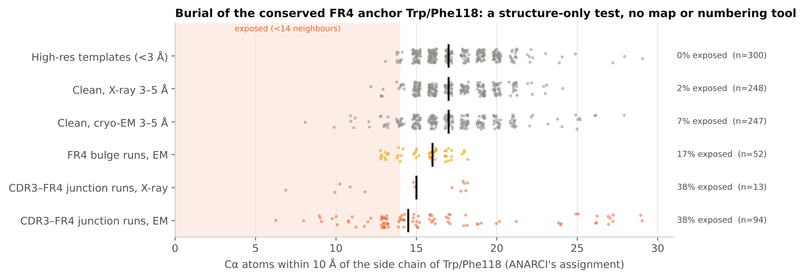
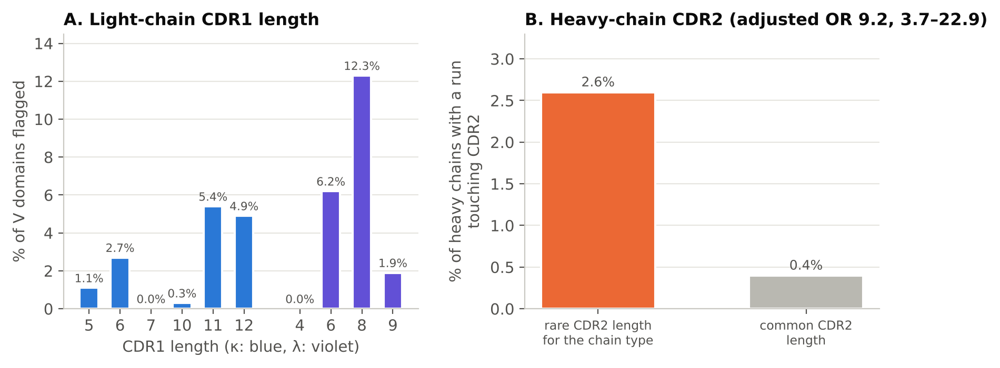
What predicts a CDR3–FR4 junction error
- Method. Cryo-EM; the adjusted OR for X-ray is 0.10.
- Era. 2.3% of cryo-EM V domains in 2020–21, falling to 0.5–0.6% from 2022.
- Map quality. Poor local map quality (OR 0.70 per SD better). Unlike flags overall, this pattern does track the map.
- Antibody features:
- κ chains with an unusually long CDR3 (11–13 residues: 7.5%, against ≤1% otherwise);
- nanobodies (1.3% vs 0.8%);
- mouse antibodies (1.0% vs 0.7% for human);
- V regions far from germline (≤80% identity: 1.2–1.4% vs 0.5–0.6%).
- Not heavy CDR3 length. There is no trend with it.
Re-assigning every error to its origin
Counting each independent event once (paper × antibody × position × shift; 303 events from 666 runs), with each assigned to the first matching category, Figure 30 shows where the errors come from. The genuinely unexplained share drops from about 40% to 5% (snapshot) and 11% (newer).
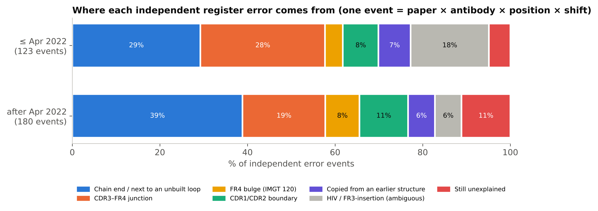
The "unexplained" errors sit at the boundaries of the hypervariable loops. An off-by-one residue count in a loop is absorbed by sliding the adjacent framework strand, often dragging a conserved core residue out of place. Only 5–11% of independent error events remain without an identified mechanism.
6Diagnosis
Putting the evidence together, register errors in antibody structures follow a three-stage life cycle.
An error is made
- At chain ends and next to unbuilt stretches, where the modeller must decide where visible density starts (29–39% of independent events).
- At loop–strand boundaries: a CDR3 built one residue short or long shifts FR4 (19–28%); FR4 bulges (4–8%); unusual CDR1/CDR2 lengths (8–11%).
- Much more often in cryo-EM (3–6× X-ray at the same resolution), and not tracked by domain-average map quality.
- Not from rushing, author disinterest, high-impact ambition or SARS-CoV-2 haste.
It spreads
- Symmetry copies: all identical copies flagged in 86% of affected entries.
- Within a paper: 34% of runs repeat an error from another entry of the same paper.
- Through templates: 84.5% of models started from a flawed structure inherit it, against 0.3% from a clean one; 82% inherit the identical error.
- A few flawed high-resolution templates (18 of 1,038) seed long lineages: Fab 1B2's 6C9U has 15 later copies in 4 labs over 8 years.
It persists
- Almost never revised: 9% of flagged antibody entries; 62% of unrevised flagged stretches are still wrong.
- Hard to see: backbone geometry is fine, cryo-EM Q-scores at 3–4 Å barely discriminate, and the domain-level map fit looks normal.
- Invisible to AlphaFold2-based audits in pre-2018 structures, the ones most often reused (10% vs 40% sensitivity).
- No quality filter on reuse: even probably-wrong registers are copied at normal rates.
Why rates rose and fell. The 2020–21 peak is the antibody field's move to cryo-EM, which in 2018–21 produced V domains with about 8% detectable register errors. The 2024 study's view that antibodies were nearly error-free before 2018 is a blind spot of its AlphaFold2-based method. From the second half of 2021, cryo-EM antibody models improved abruptly, by about half, within method and resolution. The CDR3–FR4 junction errors and template-inherited errors fell most. That timing coincides with AlphaFold2 and with prediction-based model-building tools becoming routine. The data are consistent with those tools giving modellers correct starting Fvs, but entries rarely say which tools they used, and the direct test is null.
How antibodies compare with other proteins. Across the archive, antibody V domains carry fewer register errors than other proteins, per residue and at matched length (H1b). In recent cryo-EM they are 1.4–1.6 times as error-prone per residue as non-immunoglobulin domains in the 2024 data. Most of that gap is a detector artifact, and among proteins new to the PDB it is a non-significant 1.2 times. They behave like other Ig-like domains. The larger figures from the AlphaFold-free detector describe antibodies only and are not comparable to the 2024 study's all-protein rates.
What remains. In newer cryo-EM structures, the remaining errors increasingly sit at chain ends and next to unbuilt loops, where no starting model can say where the visible density begins. About 3–5% of cryo-EM antibody V domains still carry an error this detector can see. The true figure is higher, because the detector is blind inside the CDRs, including CDR-H3, which matters most for binding.
What it is not. The intuitive story, that competitive pressure makes authors cut corners on the parts they care less about, finds no support in any test. Antibodies used as tools, papers in Nature, Science and Cell, contested targets, fast releases and the SARS-CoV-2 race were all as good or better. The variation that exists is concentrated by lab (3× the expected dispersion), and it depends on whether a good template was available.
7What would help
At deposition and validation (wwPDB)
- Run a sequence-versus-structure numbering check on every antibody and nanobody V domain. It takes about 0.3 s per chain with no structure prediction. It caught 91% of the 2024 study's flagged antibody chains, and it sees errors in pre-2018 structures that AlphaFold2-based checks miss.
- Check conserved anchors geometrically. The Trp/Phe118 side chain should be buried, and the Cys23–Cys104 disulfide should be intact. A Trp118 with fewer than 14 Cα neighbours essentially never occurs in correct structures.
- Flag the residues flanking every unmodelled gap and the first residues of every chain for register review. These are the single largest source of new errors.
- Do not rely solely on AlphaFold2-derived checks for structures in its training set. Pair them with predictor-independent checks, or with predictors whose training cut-off post-dates the structure.
For model builders
- Do not dock an old template without checking its register. Most templates are correct, but the few that are not are copied with near-certainty.
- Take extra care at CDR loop boundaries:
- count the CDR3 residues against the sequence;
- confirm that Trp/Phe118 packs into the core;
- be wary of unusual CDR1/CDR2 lengths.
- When residues cannot be built, leave the gap rather than closing it by sliding neighbours. Check that the number of missing residues matches the physical gap.
- Record the starting model and the model-building software in the deposition. Without this, nobody can learn which practices work.
For users of structural data
- Treat residue-level contacts in 3–5 Å cryo-EM antibody models with caution. This applies especially at chain termini, next to gaps and at CDR boundaries, and to any model built from an older template.
- Machine-learning data sets built from the PDB should screen V domains with a numbering-consistency check before training. A few percent of cryo-EM antibody chains carry framework register errors, and copies inflate their weight.
For the archive
- Make corrections easy and visible. When an error is confirmed in a widely reused template, notifying the entries that named it as a starting model would stop new copies.
8Limitations
- Both detectors are predictions, not ground truth. conkit-validate depends on AlphaFold2 and is blind on its training set. SAbR vs ANARCI is blind inside CDRs, and fires on framework-insertion antibodies where the two numbering conventions legitimately differ; these are tracked separately. Map-fit and burial checks support the flags, but at 3–4 Å in cryo-EM the map evidence is weak.
- Absolute rates differ between detectors. Compare rates within a detector, across groups or eras, not across detectors. The SAbR detector covers antibodies only, so antibody-vs-other-protein comparisons rest on the 2024 flags. Their sensitivity for non-antibody proteins is unknown, which bounds the recent cryo-EM comparison between about 1.2 and 2.7 times per residue (H1b).
- Units. Per-entry, per-chain, per-domain and per-residue rates differ several-fold for the same data, because entries and chains differ greatly in size. This report compares antibodies with other proteins only per domain at matched length, or per residue.
- The 2024 denominator is reconstructed. Chains the authors could not analyse count as clean here, which slightly lowers rates.
- Proxies are crude. "Author interest", "pressure", "competition" and "lab" are inferred from titles, journals, deposition dates and last authors. A modest real effect (OR below 2) could be missed in the smaller comparisons.
- Metadata are sparse. Most entries record neither the starting model nor the model-building tool, so the tests of AlphaFold-assisted modelling (H16) are weak.
- The data are observational. Labs, targets and journals differ in many unmeasured ways.
- Recent years are incomplete. Many 2025–26 entries are still on hold.
- Two analysis errors were caught and corrected during the work: the released-by-snapshot denominator, and the template tracer's reference chain (H13). The journal-tier coding error that produced a spurious OR of 38 is described in H7. All numbers here are the corrected ones.
9Appendix
Glossary
- PDB
- Protein Data Bank, the global archive of experimentally determined macromolecular structures.
- Resolution
- The level of detail in an experimental map, in ångströms (Å); smaller is better. At 3–5 Å the backbone is traceable but many side chains are not resolved.
- Cryo-EM
- Cryo-electron microscopy: 3D maps reconstructed from images of frozen single molecules.
- Map, model
- The map is the experimental density. The model is the atomic interpretation built into it and deposited.
- Register error
- A stretch of residues placed on the correct backbone but shifted by k positions along the sequence.
- Q-score, RSCC
- Per-residue measures of model-to-map fit for cryo-EM and X-ray, respectively.
- V domain, C domain
- Variable (antigen-binding) and constant domains of an antibody chain.
- FR, CDR
- Framework regions (conserved β-strands) and complementarity-determining regions (hypervariable loops) of a V domain.
- IMGT numbering
- A standard 1–128 position scheme for V domains. Conserved landmarks: Cys23, Cys104, Trp/Phe118.
- Fab, scFv, nanobody
- Antibody fragments: the heavy + light antigen-binding arm; a single-chain fusion of the two V domains; a single camelid heavy-chain V domain (VHH).
- Fiducial / tool antibody
- An antibody added to a cryo-EM sample to add mass, rigidity or alignment features to the protein of interest.
- ANARCI
- Sequence-based antibody numbering tool (hidden Markov models).
- SAbR
- Structure-based antibody numbering tool: assigns IMGT positions from backbone geometry.
- conkit-validate
- The 2024 study's register-error detector, comparing model contacts with AlphaFold2-predicted contacts.
- ECOD
- Evolutionary Classification of protein Domains, used here for fold classes.
- Per-residue hazard ratio (HR)
- Ratio of the per-residue rate at which errors occur in one group vs a reference group, estimated with an offset for domain length so that longer domains are not penalised for their size; above 1 means more errors.
- Odds ratio (OR)
- Ratio of the odds of an error in one group vs a reference group; above 1 means more errors. 95% confidence intervals are in parentheses.
- Snapshot / newer
- Released by 5 April 2022 (the 2024 study's cut-off) / released after it.
Data sources
- Sánchez Rodríguez F., Simpkin A.J., Chojnowski G., Keegan R.M., Rigden D.J. (2024). Using deep-learning predictions reveals a large number of register errors in PDB depositions. IUCrJ 11, 938. Supplementary Table S1 via the Europe PMC supplementary-files service.
- RCSB PDB Search and Data (GraphQL) APIs, including wwPDB validation per-residue Q-score and RSCC, citations, revision history and pdbx_initial_refinement_model; PDBe ModelServer for per-chain coordinates. Queried November 2026.
- ECOD v295.2 domain classification; wwPDB entries.idx and pdb_seqres.txt; SIFTS chain-to-UniProt mappings.
- ANARCI (IMGT scheme, with germline assignment) and SAbR (this repository) for numbering.
- Structure images rendered with 3Dmol.js from the deposited coordinates. Charts drawn from the analysis tables.
Code and tables
Everything is in the register_error_analysis/ folder of the delalamo/SAbR repository, branch analysis/register-errors-by-fold:
- REPORT.md: fold-class analysis.
- followup/: fiducial use, era transition, role, journal/competition and co-occurrence analyses.
- template_propagation/: family tracing and the 1B2 and 7MXL cases.
- sabr_anarci_scan/: the detector, validation and newer-structure scan.
- retest/: the original eighteen hypotheses retested with the new detector.
- retest/unexplained/: loop-boundary patterns and anchor burial.
- length_normalised/: per-residue and length-matched comparison of antibodies with other proteins, including the AlphaFold2 training-set control (H1b).
- report/: this document and its figures.
SAbR issues found during the scan
Two bugs surfaced while running SAbR on about 17,000 chains. Both were fixed in separate pull requests, with regression tests:
- Selections too short to number crashed with an internal error instead of a clear message: PR #247. These were 1–4 residues, for example a V-region range on a chain whose V domain is unmodelled (8TGZ M, 8TXQ E, 5KOV Q).
- Biopython structures built in code, which lack a header attribute, raised AttributeError: PR #248.
SAbR's experimental TCR mode disagrees with ANARCI systematically in CDR2/FR3. This is documented as a limitation rather than filed as a bug.